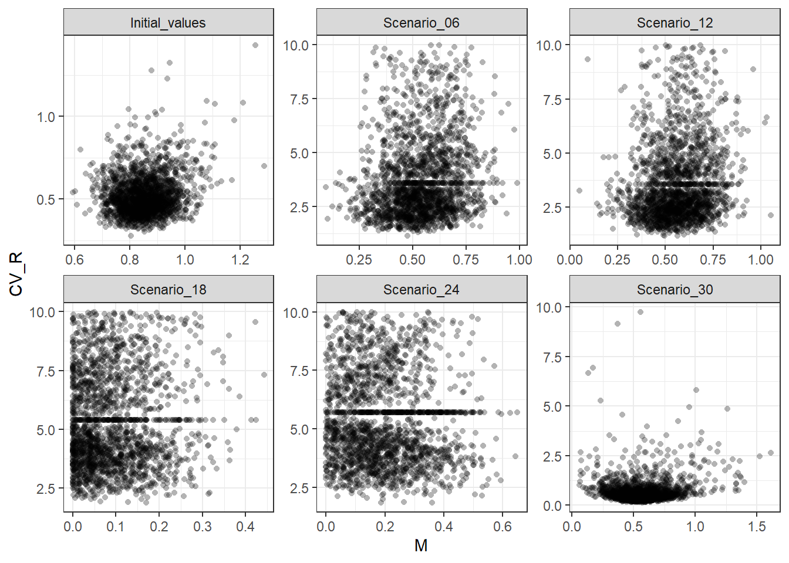
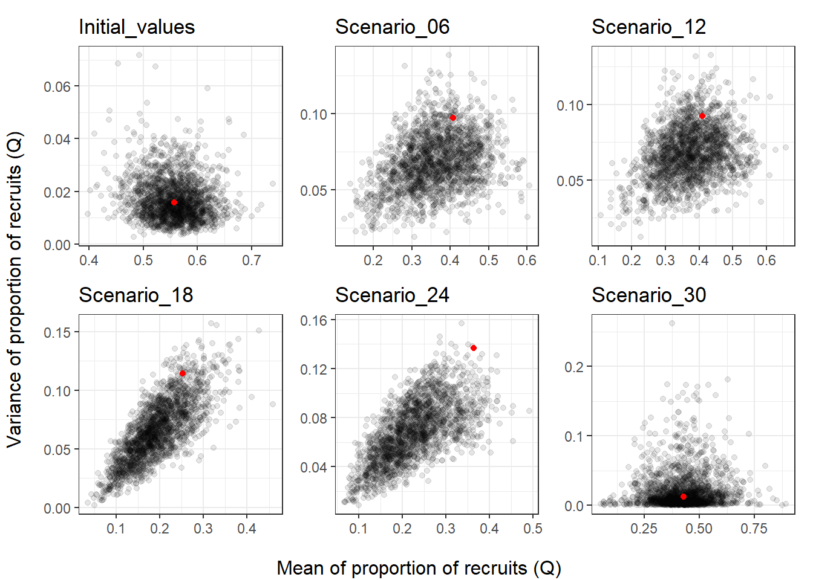
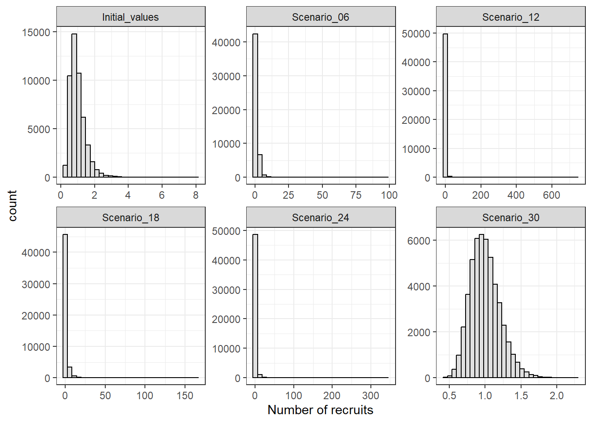
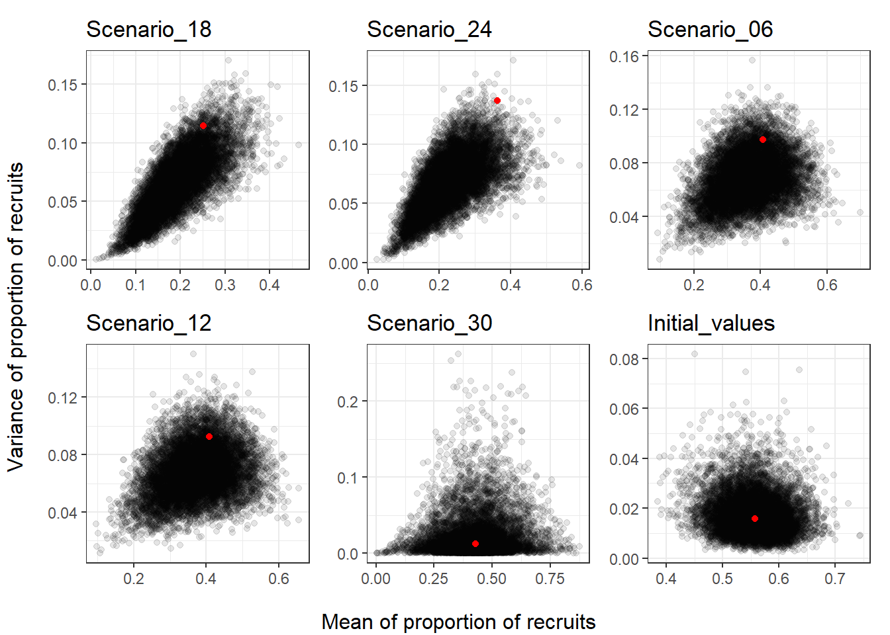
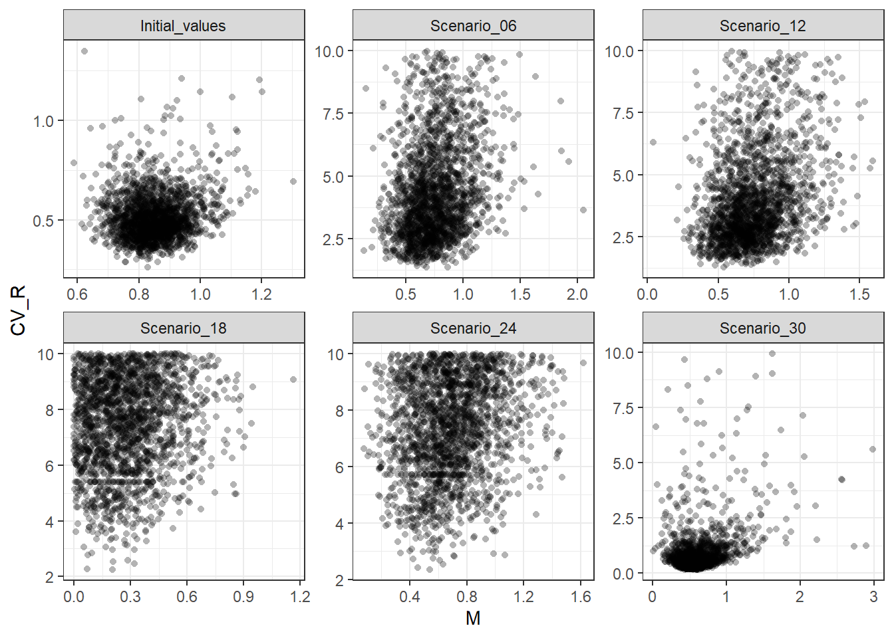
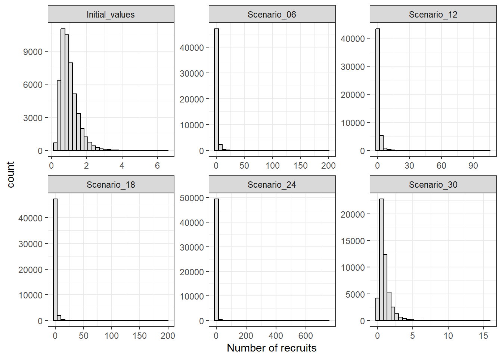

# Load required R packages
library(Grym)
library(tidyverse)
library(readxl)
library(kableExtra)
library(furrr)
library(progressr)
library(patchwork)
# Source PR functions (from https://github.com/ccamlr/Grym_Base_Case/tree/Simulations/3_Code/Source)
source("prfit.R")
theme_set(theme_bw())Simulation of Recruitment variability and natural mortality
Introduction
The aim is to simulate values of recruitment variability (in terms of coefficient of variance, \(CV_R\)) and related natural mortality (\(M\)) under different scenarios of Proportional Recruitment (PR), the method currently used in krill assessment to simulate annual recruitment whithin the GRYM.
PR scenarios considered here are a subset of those applied in Maschette et al. (2021), with each scenario consisting of proportional recruitment estimates obtained from a different time-series of survey data.
Note: GRYM defines recruitment as the number of individuals recruited to the fishery (i.e. not to the whole population). Grym applications to krill assume individuals recruit to the modeled stock fishery at age 1’.
Set-up
To generate values of \(CV_R\) and \(M\) from proportional recruitment estimates, we need to:
define the within-year natural mortality structure
choose the quantile function that defines the distribution of the proportional recruits
provide the mean and variance estimates of the proportion of recruits seen in the surveys, and the number of surveys conducted
provide approximate estimates of \(M\) and \(CV_R\)
set the number of parameter sets to generate
Load PR scenarios
For the purpose of this exercise, we are only considering scenarios with different PR parameters. All other GRYM parameters remain fixed across scenarios (for more details on PR estimates see Table 1 in Maschette et al. 2021)
scens <- read_xlsx(
path = "maschetteetal_scenarios/Grym_parameter_combinations.xlsx"
) |>
# filter scenarios under consideration
filter(
Scenarios %in%
c("Initial_values", "Scenario_06", "Scenario_12", "Scenario_18",
"Scenario_24", "Scenario_30")
) |>
select(Scenarios:`Recruitment group`, `Mean proportional recruitment`:`N. surveys`)# table with PR estimate
scens |>
kbl(digits = 4)|>
kable_styling(bootstrap_options = c("striped"), font_size = 15) | Scenarios | Source | Recruitment group | Mean proportional recruitment | SD of proportional recruitment | N. surveys |
|---|---|---|---|---|---|
| Initial_values | WG-EMM-2021 | Initial values | 0.5570 | 0.1260 | 17 |
| Scenario_06 | US-AMLR-Data (1992-2011) | Catch weighted PR by survey, strata scaled | 0.4080 | 0.3118 | 20 |
| Scenario_12 | US-AMLR-Data & Russian Survey data combined | Catch weighted PR by survey, strata scaled | 0.4089 | 0.3040 | 21 |
| Scenario_18 | US-AMLR-Data (1991-2011) | Catch weighted PR by haul @36mm | 0.2520 | 0.3380 | 21 |
| Scenario_24 | US-AMLR-Data (1991-2011) | Catch weighted PR by haul @40mm | 0.3630 | 0.3700 | 21 |
| Scenario_30 | Russian survey 2020 | Catch weighted PR by strata, strata scaled | 0.4281 | 0.1112 | 3 |
Tidy-up parameter data for use in simulations.
scens_sim_pars <- scens |>
rename(
mnQ = `Mean proportional recruitment`,
sdQ = `SD of proportional recruitment`,
n_surveys = `N. surveys`
) %>%
select(Scenarios, mnQ, sdQ, n_surveys)Set-up simulation function for parallelization
gen_recs <- function(dt, nsim){
p <- progressor(steps = nrow(dt))
dt |>
future_pmap(function(Scenarios, mnQ, sdQ, n_surveys, M0, CV0, ref_age, qdist, Msf){
out <- replicate(
n = nsim,
expr = prFit(
qdist = qdist,
Msf = Msf,
mnR = mnQ,
vrR = sdQ^2,
n = n_surveys,
M0 = M0,
CV0 = CV0,
r = ref_age)
) |>
t() |>
data.frame()
p(sprintf("Finished %s", Scenarios))
out
},
.options = furrr_options(seed = TRUE)
)
}Simulation
Generate draws of \(CV_R\) and \(M\) under each scenario. Note: simulations take quite a while to run so this section should only be run in a local R session, i.e. the following code chunks are not evaluated during rendering.
Add to data with parameters under each scenario.
scens_sim_pars <- scens_sim_pars |>
mutate(M0, CV0, ref_age, qdist = list(qdist), Msf = list(Msf))Trial run to find suitable initial values M0 and CV0 for each scenario
plan(multisession, workers = availableCores()-2)
handlers("progress")
with_progress(
cvR_M_trial_ibeta <- gen_recs(
dt = scens_sim_pars,
nsim = 100)
)
names(cvR_M_trial) <- scens_sim_pars$Scenarios
plan(sequential)
# compute means of simulated values
M0_CV0_init <- cvR_M_trial |>
bind_rows(.id = "scn_id") |>
group_by(scn_id) |>
summarise(across(c(M, CV), .fns = mean, .names = "{.col}0"))
# # write out so that code runs smoothly when rendered
write_rds(M0_CV0_init, "M0_CV0_init.rds")Update parameters with good initialization values
M0_CV0_init <- read_rds("M0_CV0_init.rds")
# add initial values to the scenario parameters dataset
scens_sim_pars <- scens_sim_pars |>
mutate(
M0 = M0_CV0_init$M0,
CV0 = M0_CV0_init$CV0
)
scens_sim_parsGenerate draws of \(CV_R\) and \(M\) under each scenario
plan(multisession, workers = availableCores()-2)
handlers("progress")
with_progress(
cvR_M_draws_scen <- gen_recs(
dt = scens_sim_pars,
nsim = nsim
)
)
names(cvR_M_draws_scen) <- scens_sim_pars$Scenarios
plan(sequential)
# save draws externally
write_rds(x = cvR_M_draws_scen, file = "cvR_M_draws_scen.rds")
cvR_M_draws_scenCheck simulated parameters
Code
cvR_M_draws_scen |>
bind_rows(.id = "scn_id") |>
ggplot(aes(x = M, y = CV)) +
geom_point(shape = 16, alpha = 0.3) +
labs(y = "CV_R") +
facet_wrap(~scn_id, scales = "free")
Summary statistics of simulated \(CV_R\) and \(M\)
cvR_M_draws_scen |>
bind_rows(.id = "scn_id") |>
group_by(scn_id) |>
summarise(mean_M = mean(M), sd_M = sd(M), min_M = min(M), max_M = max(M),
mean_CV_R = mean(CV), sd_CV_R = sd(CV), min_CV = min(CV), max_CV = max(CV))Frequency of draws with mortality equal to zero.
cvR_M_draws_scen |>
bind_rows(.id = "scn_id") |>
filter(M == 0) |>
group_by(scn_id) |>
count()Reverse-check - i.e. simulate survey estimates of PR by running the population model using recruitment series generated from draws of \(M\) and \(CV_R\) (based on code provided in krill’s GRYM workshop).
Code
scens_sim_pars |>
split(scens_sim_pars$Scenarios) |>
map2(.y = cvR_M_draws_scen, function(scn_pars, scn_draws){
# Simulate observation process for each draw of CV_R and M, i.e. generate
# `n` random age structures for each draw of CV_R and M and estimate mean
# and variance of the proportion of recruits that would be observed in surveys
pr_mn_vr <- scn_draws |>
rowwise() |>
summarize(as.data.frame(t(prSim(qdist, Msf, n = scn_pars$n_surveys, M, CV, r = ref_age))), .groups="drop") |>
as.data.frame() |>
rename(sim_mnQ = mnR, sim_vrQ = vrR)
title <- scn_pars$Scenarios
# Compare simulated values of mean and variance of proportional recruitment
# with those actually obtained from surveys
ggplot(pr_mn_vr, aes(x = sim_mnQ, y = sim_vrQ)) +
geom_point(alpha = 0.1)+
geom_point(aes(x = mnQ, y = sdQ^2), col = "red", data = scn_pars) +
labs(title = title) +
theme(axis.title = element_blank())
}) |>
wrap_plots() |>
patchworkGrob() |>
gridExtra::grid.arrange(
left = "Variance of proportion of recruits (Q)",
bottom = "Mean of proportion of recruits (Q)"
)
Generate recruitment series from a single draw of proportional recruitment parameters, with a mean of 1 and expected \(CV_R\).
r_series <- cvR_M_draws_scen |>
map(slice, 107) |>
bind_rows(.id = "scn_id") |>
rowwise() |>
mutate(
rec_series = list(recdist(n = 50000, mn = mnQ, vr = vrQ))
) |>
unnest(rec_series)Code
r_series |>
ggplot() +
geom_histogram(aes(x = rec_series), col = "black", fill = "gray88") +
labs(x = "Number of recruits") +
facet_wrap(~scn_id, scales = "free")
Comparing drawn value of \(CV_R\) with summary statistics of the generated recruitment series.
r_series |>
rename(CV_R = CV) |>
group_by(scn_id, CV_R) |>
summarise(
mean_R_sample = mean(rec_series),
CV_R_sample = sd(rec_series)/mean_R_sample,
.groups = "drop"
)Substantial difference between the CV of samples and the expected CV in scenarios Scenario_12 and Scenario_24…
Check recruitment series from Maschette et al (2021)
rec_samples_maschette <- list.files("maschetteetal_scenarios/Recruitment_vectors/", full.names = TRUE) |>
map(read_rds)
scens_sim_pars_maschette <- rec_samples_maschette |>
map_df(~tibble(
survey_mnQ = .$R.mean, survey_sdQ = .$R.sd, n_surveys = .$R.nsurveys,
ref_age = .$R.class, qdist = list(.$qdist),
Msf = list(rep(1, length(.$Ages))),
cvR_M_draws = list(.$pars)
))
scens_sim_pars_maschette <- right_join(
scens_sim_pars_maschette,
select(scens_sim_pars, Scenarios:sdQ),
by = c("survey_mnQ" = "mnQ", "survey_sdQ" = "sdQ")
) |>
relocate(Scenarios, .before = 1)Summary statistics of simulated \(CV_R\) and \(M\)
scens_sim_pars_maschette |>
mutate(
cvR_M_draws_stats = map(
cvR_M_draws,
~summarise(., across(c(M, CV), .fns = list(mean = mean, sd = sd, min = min, max = max)))
)
) |>
select(Scenarios, cvR_M_draws_stats) |>
unnest(cvR_M_draws_stats)Some of the scenarios have draws of \(M\) of 0. This implies that, in the absence of fishing mortality, the population status over time is solely driven by the annual recruitments.
Code
# Reverse-check - i.e. simulate survey estimates of PR by running the population
# model using recruitment series generated from PR parameters (based on code
# provided in krill's GRYM workshop)
scens_sim_pars_maschette |>
rowwise() |>
pmap(function(Scenarios, survey_mnQ, survey_sdQ, n_surveys, ref_age, qdist, Msf,cvR_M_draws){
# Simulate observation process for each draw of CV_R and M, i.e. generate
# `n` random age structures for each draw of CV_R and M and estimate mean
# and variance of the proportion of recruits that would be observed in surveys
pr_mn_vr <- cvR_M_draws |>
rowwise() |>
mutate(sim_Q = list(prSim(qdist, Msf, n = n_surveys, M, CV, r = ref_age))) |>
hoist(sim_Q, sim_mnQ = 1, sim_vrQ = 2)
title <- Scenarios
# Compare simulated values of mean and variance of proportional recruitment
# with those actually obtained from surveys
ggplot(pr_mn_vr, aes(x = sim_mnQ, y = sim_vrQ)) +
geom_point(alpha = 0.1)+
geom_point(aes(x = survey_mnQ, y = survey_sdQ^2), col = "red") +
labs(title = title) +
theme(axis.title = element_blank())
}) |>
wrap_plots() |>
patchworkGrob() |>
gridExtra::grid.arrange(
left = "Variance of proportion of recruits",
bottom = "Mean of proportion of recruits"
)
Generate recruitments from one draw of proportional recruitment parameters, with a mean of 1 and expected \(CV_R\).
r_series_maschette <- scens_sim_pars_maschette |>
select(Scenarios, cvR_M_draws) |>
unnest(cvR_M_draws) |>
group_by(Scenarios) |>
slice(107) |>
rowwise() |>
mutate(
rec_series = list(recdist(n = 50000, mn = mnQ, vr = vrQ))
) |>
unnest(rec_series)Comparing \(CV_R\) with summary statistics of the recruitment series.
r_series_maschette |>
rename(CV_R = CV) |>
group_by(Scenarios, CV_R) |>
summarise(
mean_R_sample = mean(rec_series),
CV_R_sample = sd(rec_series)/mean_R_sample,
.groups = "drop"
)Similarly to what was observed above for locally simulated values of \(CV_R\), there are non-negligible differences between the CV of samples and the expected CV (e.g. Scenario_12, Scenario_12 and Scenario_24).
Try lognormally distributed \(Q\)
See if logNormal assumption also generates draws with mortality equal to zero.
scens_sim_pars_qlnorm <- scens_sim_pars |>
mutate(qdist = list(qLogNormal))
plan(multisession, workers = availableCores()-2)
handlers("progress")
with_progress(
cvR_M_draws_scen_qlnorm <- gen_recs(
dt = scens_sim_pars_qlnorm,
nsim = nsim
)
)
names(cvR_M_draws_scen_qlnorm) <- scens_sim_pars_qlnorm$Scenarios
plan(sequential)
# save draws externally
write_rds(x = cvR_M_draws_scen_qlnorm, file = "cvR_M_draws_scen_qlnorm.rds")
cvR_M_draws_scen_qlnormcvR_M_draws_scen_qlnorm <- read_rds("cvR_M_draws_scen_qlnorm.rds")Code
cvR_M_draws_scen_qlnorm |>
bind_rows(.id = "scn_id") |>
ggplot(aes(x = M, y = CV)) +
geom_point(shape = 16, alpha = 0.3) +
labs(y = "CV_R") +
facet_wrap(~scn_id, scales = "free")
Summary statistics of simulated values of \(CV_R\) and \(M\).
cvR_M_draws_scen_qlnorm |>
bind_rows(.id = "scn_id") |>
group_by(scn_id) |>
summarise(mean_M = mean(M), sd_M = sd(M), min_M = min(M), max_M = max(M),
mean_CV_R = mean(CV), sd_CV_R = sd(CV), min_CV = min(CV), max_CV = max(CV))Frequency of draws with M == 0.
cvR_M_draws_scen_qlnorm |>
bind_rows(.id = "scn_id") |>
filter(M == 0) |>
group_by(scn_id) |>
count()Generate recruitment series from a single draw of proportional recruitment parameters, with a mean of 1 and expected \(CV_R\).
r_series_qlnorm <- cvR_M_draws_scen_qlnorm |>
map(slice, 10) |>
bind_rows(.id = "scn_id") |>
rowwise() |>
mutate(
rec_series = list(recLogNormal(n = 50000, mn = mnQ, vr = vrQ))
) |>
unnest(rec_series)Code
r_series_qlnorm |>
ggplot() +
geom_histogram(aes(x = rec_series), col = "black", fill = "gray88") +
labs(x = "Number of recruits") +
facet_wrap(~scn_id, scales = "free")
Comparing drawn value of \(CV_R\) with summary statistics of the generated recruitment series.
r_series_qlnorm |>
rename(CV_R = CV) |>
group_by(scn_id, CV_R) |>
summarise(
mean_R_sample = mean(rec_series),
CV_R_sample = sd(rec_series)/mean_R_sample,
.groups = "drop"
)References
Maschette, D, S Wotherspoon, S Kawaguchi, and Philippe Ziegler. 2021. “Grym Assessment for Subarea 48.1 Euphausia Superba Populations.” WG-FSA-2021/39. CCAMLR. https://meetings.ccamlr.org/en/wg-fsa-2021/39.